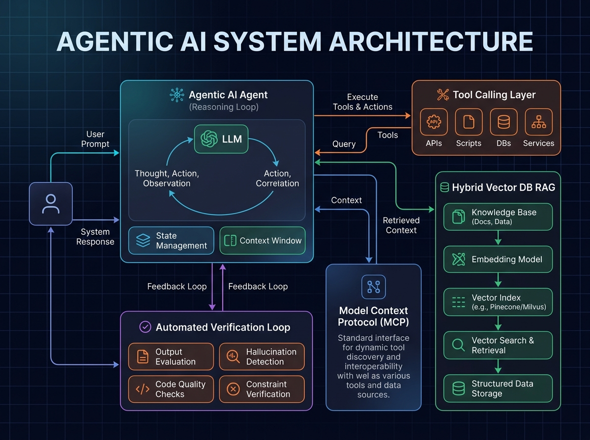

Agentic AI Systems & Multi-Agent Architecture
Model Context Protocol (MCP), LLM Tool-Calling Layers, Hybrid RAG and Automated Self-Correction Loops
Project Overview
Moving beyond basic text completion, Agentic AI leverages autonomous Large Language Model (LLM) agents that break down complex engineering workflows, call external tools, query real-time data, and verify outputs through self-correction loops.
The Challenge
Standard prompt-response interactions often produce hallucinations, cannot access live internal systems, and lack execution guarantees for software and hardware workflows.
The Engineering Solution
I architected a modular multi-agent framework:
- Model Context Protocol (MCP) Integration: Standardized agent-to-tool communications, enabling models to discover schemas, run terminal commands, execute code, and query APIs securely.
- Hybrid Vector and BM25 Retrieval (RAG): Combined dense semantic vector embeddings with keyword BM25 retrieval for high-accuracy contextual retrieval without hallucinated sources.
- Automated Review and Self-Correction Loops: Implemented specialized subagent teams (Planner, Builder, and Reviewer) with automated test and verification stages to ensure reliable code generation.
Multi-Agent Architecture and Pipeline

System Capabilities and Results
The multi-agent architecture enabled reliable reasoning and verifiable task execution: